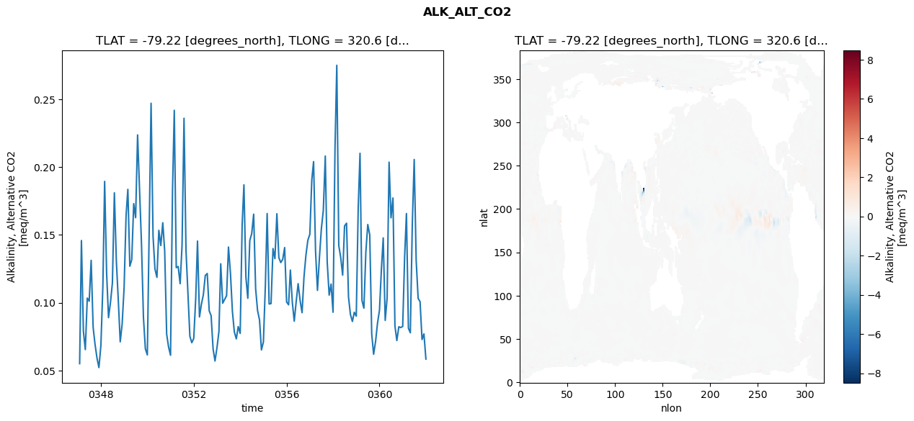
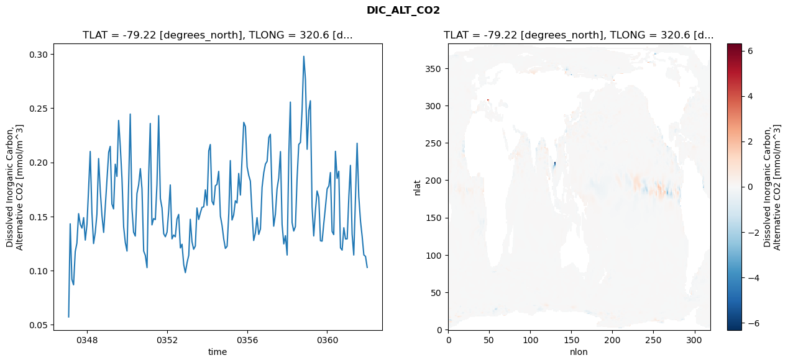
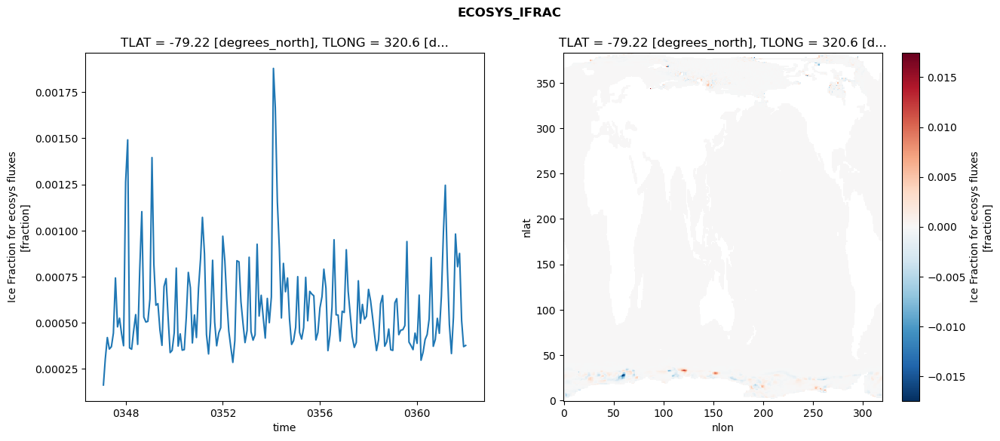
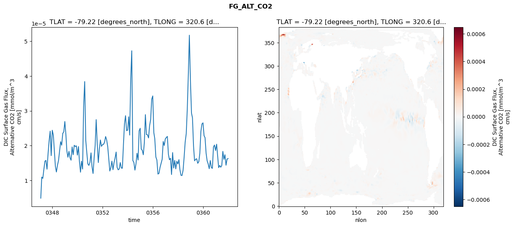

glb-dor_North_Atlantic_basin_025_1999-01-01_00100#
Simulation details#
Case: smyle.cdr-atlas-v0.glb-dor_North_Atlantic_basin_025_1999-01-01_00100.001
Basin: North_Atlantic_basin
Polygon: 25.0
Start date: 1999-01
Show code cell source Hide code cell source
import xarray as xr
import matplotlib.pyplot as plt
Show code cell source Hide code cell source
zarr_store = "/path/to/zarr/store"
# Parameters
zarr_store = "/global/cfs/projectdirs/m4746/Projects/Ocean-CDR-Atlas-v0/data/validation/smyle.cdr-atlas-v0.glb-dor_North_Atlantic_basin_025_1999-01-01_00100.001.validation.zarr"
Show code cell source Hide code cell source
%%time
ds_o = xr.open_zarr(zarr_store).compute()
ds_o
CPU times: user 697 ms, sys: 431 ms, total: 1.13 s
Wall time: 1.43 s
<xarray.Dataset> Size: 2MB
Dimensions: (nlat: 384, nlon: 320, time: 180)
Coordinates:
TLAT float64 8B -79.22
TLONG float64 8B 320.6
ULAT float64 8B -78.95
ULONG float64 8B 321.1
* time (time) object 1kB 0347-02-01 00:00:00 ... 0362-01-01 0...
z_t float32 4B 500.0
Dimensions without coordinates: nlat, nlon
Data variables:
ALK_ALT_CO2_diff (nlat, nlon) float32 492kB nan nan nan ... nan nan nan
ALK_ALT_CO2_rmse (time) float64 1kB 0.05512 0.1459 ... 0.07708 0.05851
DIC_ALT_CO2_diff (nlat, nlon) float32 492kB nan nan nan ... nan nan nan
DIC_ALT_CO2_rmse (time) float64 1kB 0.05725 0.1432 ... 0.1132 0.103
ECOSYS_IFRAC_diff (nlat, nlon) float32 492kB nan nan nan ... nan nan nan
ECOSYS_IFRAC_rmse (time) float64 1kB 0.0001631 0.0003034 ... 0.0003774
FG_ALT_CO2_diff (nlat, nlon) float32 492kB nan nan nan ... nan nan nan
FG_ALT_CO2_rmse (time) float64 1kB 4.918e-06 1.099e-05 ... 1.629e-05xarray.Dataset
- nlat: 384
- nlon: 320
- time: 180
- TLAT()float64-79.22
- long_name :
- array of t-grid latitudes
- units :
- degrees_north
array(-79.22052261)
- TLONG()float64320.6
- long_name :
- array of t-grid longitudes
- units :
- degrees_east
array(320.56250892)
- ULAT()float64-78.95
- long_name :
- array of u-grid latitudes
- units :
- degrees_north
array(-78.95289509)
- ULONG()float64321.1
- long_name :
- array of u-grid longitudes
- units :
- degrees_east
array(321.12500894)
- time(time)object0347-02-01 00:00:00 ... 0362-01-...
- bounds :
- time_bound
- long_name :
- time
array([cftime.DatetimeNoLeap(347, 2, 1, 0, 0, 0, 0, has_year_zero=True), cftime.DatetimeNoLeap(347, 3, 1, 0, 0, 0, 0, has_year_zero=True), cftime.DatetimeNoLeap(347, 4, 1, 0, 0, 0, 0, has_year_zero=True), cftime.DatetimeNoLeap(347, 5, 1, 0, 0, 0, 0, has_year_zero=True), cftime.DatetimeNoLeap(347, 6, 1, 0, 0, 0, 0, has_year_zero=True), cftime.DatetimeNoLeap(347, 7, 1, 0, 0, 0, 0, has_year_zero=True), cftime.DatetimeNoLeap(347, 8, 1, 0, 0, 0, 0, has_year_zero=True), cftime.DatetimeNoLeap(347, 9, 1, 0, 0, 0, 0, has_year_zero=True), cftime.DatetimeNoLeap(347, 10, 1, 0, 0, 0, 0, has_year_zero=True), cftime.DatetimeNoLeap(347, 11, 1, 0, 0, 0, 0, has_year_zero=True), cftime.DatetimeNoLeap(347, 12, 1, 0, 0, 0, 0, has_year_zero=True), cftime.DatetimeNoLeap(348, 1, 1, 0, 0, 0, 0, has_year_zero=True), cftime.DatetimeNoLeap(348, 2, 1, 0, 0, 0, 0, has_year_zero=True), cftime.DatetimeNoLeap(348, 3, 1, 0, 0, 0, 0, has_year_zero=True), cftime.DatetimeNoLeap(348, 4, 1, 0, 0, 0, 0, has_year_zero=True), cftime.DatetimeNoLeap(348, 5, 1, 0, 0, 0, 0, has_year_zero=True), cftime.DatetimeNoLeap(348, 6, 1, 0, 0, 0, 0, has_year_zero=True), cftime.DatetimeNoLeap(348, 7, 1, 0, 0, 0, 0, has_year_zero=True), cftime.DatetimeNoLeap(348, 8, 1, 0, 0, 0, 0, has_year_zero=True), cftime.DatetimeNoLeap(348, 9, 1, 0, 0, 0, 0, has_year_zero=True), cftime.DatetimeNoLeap(348, 10, 1, 0, 0, 0, 0, has_year_zero=True), cftime.DatetimeNoLeap(348, 11, 1, 0, 0, 0, 0, has_year_zero=True), cftime.DatetimeNoLeap(348, 12, 1, 0, 0, 0, 0, has_year_zero=True), cftime.DatetimeNoLeap(349, 1, 1, 0, 0, 0, 0, has_year_zero=True), cftime.DatetimeNoLeap(349, 2, 1, 0, 0, 0, 0, has_year_zero=True), cftime.DatetimeNoLeap(349, 3, 1, 0, 0, 0, 0, has_year_zero=True), cftime.DatetimeNoLeap(349, 4, 1, 0, 0, 0, 0, has_year_zero=True), cftime.DatetimeNoLeap(349, 5, 1, 0, 0, 0, 0, has_year_zero=True), cftime.DatetimeNoLeap(349, 6, 1, 0, 0, 0, 0, has_year_zero=True), cftime.DatetimeNoLeap(349, 7, 1, 0, 0, 0, 0, has_year_zero=True), cftime.DatetimeNoLeap(349, 8, 1, 0, 0, 0, 0, has_year_zero=True), cftime.DatetimeNoLeap(349, 9, 1, 0, 0, 0, 0, has_year_zero=True), cftime.DatetimeNoLeap(349, 10, 1, 0, 0, 0, 0, has_year_zero=True), cftime.DatetimeNoLeap(349, 11, 1, 0, 0, 0, 0, has_year_zero=True), cftime.DatetimeNoLeap(349, 12, 1, 0, 0, 0, 0, has_year_zero=True), cftime.DatetimeNoLeap(350, 1, 1, 0, 0, 0, 0, has_year_zero=True), cftime.DatetimeNoLeap(350, 2, 1, 0, 0, 0, 0, has_year_zero=True), cftime.DatetimeNoLeap(350, 3, 1, 0, 0, 0, 0, has_year_zero=True), cftime.DatetimeNoLeap(350, 4, 1, 0, 0, 0, 0, has_year_zero=True), cftime.DatetimeNoLeap(350, 5, 1, 0, 0, 0, 0, has_year_zero=True), cftime.DatetimeNoLeap(350, 6, 1, 0, 0, 0, 0, has_year_zero=True), cftime.DatetimeNoLeap(350, 7, 1, 0, 0, 0, 0, has_year_zero=True), cftime.DatetimeNoLeap(350, 8, 1, 0, 0, 0, 0, has_year_zero=True), cftime.DatetimeNoLeap(350, 9, 1, 0, 0, 0, 0, has_year_zero=True), cftime.DatetimeNoLeap(350, 10, 1, 0, 0, 0, 0, has_year_zero=True), cftime.DatetimeNoLeap(350, 11, 1, 0, 0, 0, 0, has_year_zero=True), cftime.DatetimeNoLeap(350, 12, 1, 0, 0, 0, 0, has_year_zero=True), cftime.DatetimeNoLeap(351, 1, 1, 0, 0, 0, 0, has_year_zero=True), cftime.DatetimeNoLeap(351, 2, 1, 0, 0, 0, 0, has_year_zero=True), cftime.DatetimeNoLeap(351, 3, 1, 0, 0, 0, 0, has_year_zero=True), cftime.DatetimeNoLeap(351, 4, 1, 0, 0, 0, 0, has_year_zero=True), cftime.DatetimeNoLeap(351, 5, 1, 0, 0, 0, 0, has_year_zero=True), cftime.DatetimeNoLeap(351, 6, 1, 0, 0, 0, 0, has_year_zero=True), cftime.DatetimeNoLeap(351, 7, 1, 0, 0, 0, 0, has_year_zero=True), cftime.DatetimeNoLeap(351, 8, 1, 0, 0, 0, 0, has_year_zero=True), cftime.DatetimeNoLeap(351, 9, 1, 0, 0, 0, 0, has_year_zero=True), cftime.DatetimeNoLeap(351, 10, 1, 0, 0, 0, 0, has_year_zero=True), cftime.DatetimeNoLeap(351, 11, 1, 0, 0, 0, 0, has_year_zero=True), cftime.DatetimeNoLeap(351, 12, 1, 0, 0, 0, 0, has_year_zero=True), cftime.DatetimeNoLeap(352, 1, 1, 0, 0, 0, 0, has_year_zero=True), cftime.DatetimeNoLeap(352, 2, 1, 0, 0, 0, 0, has_year_zero=True), cftime.DatetimeNoLeap(352, 3, 1, 0, 0, 0, 0, has_year_zero=True), cftime.DatetimeNoLeap(352, 4, 1, 0, 0, 0, 0, has_year_zero=True), cftime.DatetimeNoLeap(352, 5, 1, 0, 0, 0, 0, has_year_zero=True), cftime.DatetimeNoLeap(352, 6, 1, 0, 0, 0, 0, has_year_zero=True), cftime.DatetimeNoLeap(352, 7, 1, 0, 0, 0, 0, has_year_zero=True), cftime.DatetimeNoLeap(352, 8, 1, 0, 0, 0, 0, has_year_zero=True), cftime.DatetimeNoLeap(352, 9, 1, 0, 0, 0, 0, has_year_zero=True), cftime.DatetimeNoLeap(352, 10, 1, 0, 0, 0, 0, has_year_zero=True), cftime.DatetimeNoLeap(352, 11, 1, 0, 0, 0, 0, has_year_zero=True), cftime.DatetimeNoLeap(352, 12, 1, 0, 0, 0, 0, has_year_zero=True), cftime.DatetimeNoLeap(353, 1, 1, 0, 0, 0, 0, has_year_zero=True), cftime.DatetimeNoLeap(353, 2, 1, 0, 0, 0, 0, has_year_zero=True), cftime.DatetimeNoLeap(353, 3, 1, 0, 0, 0, 0, has_year_zero=True), cftime.DatetimeNoLeap(353, 4, 1, 0, 0, 0, 0, has_year_zero=True), cftime.DatetimeNoLeap(353, 5, 1, 0, 0, 0, 0, has_year_zero=True), cftime.DatetimeNoLeap(353, 6, 1, 0, 0, 0, 0, has_year_zero=True), cftime.DatetimeNoLeap(353, 7, 1, 0, 0, 0, 0, has_year_zero=True), cftime.DatetimeNoLeap(353, 8, 1, 0, 0, 0, 0, has_year_zero=True), cftime.DatetimeNoLeap(353, 9, 1, 0, 0, 0, 0, has_year_zero=True), cftime.DatetimeNoLeap(353, 10, 1, 0, 0, 0, 0, has_year_zero=True), cftime.DatetimeNoLeap(353, 11, 1, 0, 0, 0, 0, has_year_zero=True), cftime.DatetimeNoLeap(353, 12, 1, 0, 0, 0, 0, has_year_zero=True), cftime.DatetimeNoLeap(354, 1, 1, 0, 0, 0, 0, has_year_zero=True), cftime.DatetimeNoLeap(354, 2, 1, 0, 0, 0, 0, has_year_zero=True), cftime.DatetimeNoLeap(354, 3, 1, 0, 0, 0, 0, has_year_zero=True), cftime.DatetimeNoLeap(354, 4, 1, 0, 0, 0, 0, has_year_zero=True), cftime.DatetimeNoLeap(354, 5, 1, 0, 0, 0, 0, has_year_zero=True), cftime.DatetimeNoLeap(354, 6, 1, 0, 0, 0, 0, has_year_zero=True), cftime.DatetimeNoLeap(354, 7, 1, 0, 0, 0, 0, has_year_zero=True), cftime.DatetimeNoLeap(354, 8, 1, 0, 0, 0, 0, has_year_zero=True), cftime.DatetimeNoLeap(354, 9, 1, 0, 0, 0, 0, has_year_zero=True), cftime.DatetimeNoLeap(354, 10, 1, 0, 0, 0, 0, has_year_zero=True), cftime.DatetimeNoLeap(354, 11, 1, 0, 0, 0, 0, has_year_zero=True), cftime.DatetimeNoLeap(354, 12, 1, 0, 0, 0, 0, has_year_zero=True), cftime.DatetimeNoLeap(355, 1, 1, 0, 0, 0, 0, has_year_zero=True), cftime.DatetimeNoLeap(355, 2, 1, 0, 0, 0, 0, has_year_zero=True), cftime.DatetimeNoLeap(355, 3, 1, 0, 0, 0, 0, has_year_zero=True), cftime.DatetimeNoLeap(355, 4, 1, 0, 0, 0, 0, has_year_zero=True), cftime.DatetimeNoLeap(355, 5, 1, 0, 0, 0, 0, has_year_zero=True), cftime.DatetimeNoLeap(355, 6, 1, 0, 0, 0, 0, has_year_zero=True), cftime.DatetimeNoLeap(355, 7, 1, 0, 0, 0, 0, has_year_zero=True), cftime.DatetimeNoLeap(355, 8, 1, 0, 0, 0, 0, has_year_zero=True), cftime.DatetimeNoLeap(355, 9, 1, 0, 0, 0, 0, has_year_zero=True), cftime.DatetimeNoLeap(355, 10, 1, 0, 0, 0, 0, has_year_zero=True), cftime.DatetimeNoLeap(355, 11, 1, 0, 0, 0, 0, has_year_zero=True), cftime.DatetimeNoLeap(355, 12, 1, 0, 0, 0, 0, has_year_zero=True), cftime.DatetimeNoLeap(356, 1, 1, 0, 0, 0, 0, has_year_zero=True), cftime.DatetimeNoLeap(356, 2, 1, 0, 0, 0, 0, has_year_zero=True), cftime.DatetimeNoLeap(356, 3, 1, 0, 0, 0, 0, has_year_zero=True), cftime.DatetimeNoLeap(356, 4, 1, 0, 0, 0, 0, has_year_zero=True), cftime.DatetimeNoLeap(356, 5, 1, 0, 0, 0, 0, has_year_zero=True), cftime.DatetimeNoLeap(356, 6, 1, 0, 0, 0, 0, has_year_zero=True), cftime.DatetimeNoLeap(356, 7, 1, 0, 0, 0, 0, has_year_zero=True), cftime.DatetimeNoLeap(356, 8, 1, 0, 0, 0, 0, has_year_zero=True), cftime.DatetimeNoLeap(356, 9, 1, 0, 0, 0, 0, has_year_zero=True), cftime.DatetimeNoLeap(356, 10, 1, 0, 0, 0, 0, has_year_zero=True), cftime.DatetimeNoLeap(356, 11, 1, 0, 0, 0, 0, has_year_zero=True), cftime.DatetimeNoLeap(356, 12, 1, 0, 0, 0, 0, has_year_zero=True), cftime.DatetimeNoLeap(357, 1, 1, 0, 0, 0, 0, has_year_zero=True), cftime.DatetimeNoLeap(357, 2, 1, 0, 0, 0, 0, has_year_zero=True), cftime.DatetimeNoLeap(357, 3, 1, 0, 0, 0, 0, has_year_zero=True), cftime.DatetimeNoLeap(357, 4, 1, 0, 0, 0, 0, has_year_zero=True), cftime.DatetimeNoLeap(357, 5, 1, 0, 0, 0, 0, has_year_zero=True), cftime.DatetimeNoLeap(357, 6, 1, 0, 0, 0, 0, has_year_zero=True), cftime.DatetimeNoLeap(357, 7, 1, 0, 0, 0, 0, has_year_zero=True), cftime.DatetimeNoLeap(357, 8, 1, 0, 0, 0, 0, has_year_zero=True), cftime.DatetimeNoLeap(357, 9, 1, 0, 0, 0, 0, has_year_zero=True), cftime.DatetimeNoLeap(357, 10, 1, 0, 0, 0, 0, has_year_zero=True), cftime.DatetimeNoLeap(357, 11, 1, 0, 0, 0, 0, has_year_zero=True), cftime.DatetimeNoLeap(357, 12, 1, 0, 0, 0, 0, has_year_zero=True), cftime.DatetimeNoLeap(358, 1, 1, 0, 0, 0, 0, has_year_zero=True), cftime.DatetimeNoLeap(358, 2, 1, 0, 0, 0, 0, has_year_zero=True), cftime.DatetimeNoLeap(358, 3, 1, 0, 0, 0, 0, has_year_zero=True), cftime.DatetimeNoLeap(358, 4, 1, 0, 0, 0, 0, has_year_zero=True), cftime.DatetimeNoLeap(358, 5, 1, 0, 0, 0, 0, has_year_zero=True), cftime.DatetimeNoLeap(358, 6, 1, 0, 0, 0, 0, has_year_zero=True), cftime.DatetimeNoLeap(358, 7, 1, 0, 0, 0, 0, has_year_zero=True), cftime.DatetimeNoLeap(358, 8, 1, 0, 0, 0, 0, has_year_zero=True), cftime.DatetimeNoLeap(358, 9, 1, 0, 0, 0, 0, has_year_zero=True), cftime.DatetimeNoLeap(358, 10, 1, 0, 0, 0, 0, has_year_zero=True), cftime.DatetimeNoLeap(358, 11, 1, 0, 0, 0, 0, has_year_zero=True), cftime.DatetimeNoLeap(358, 12, 1, 0, 0, 0, 0, has_year_zero=True), cftime.DatetimeNoLeap(359, 1, 1, 0, 0, 0, 0, has_year_zero=True), cftime.DatetimeNoLeap(359, 2, 1, 0, 0, 0, 0, has_year_zero=True), cftime.DatetimeNoLeap(359, 3, 1, 0, 0, 0, 0, has_year_zero=True), cftime.DatetimeNoLeap(359, 4, 1, 0, 0, 0, 0, has_year_zero=True), cftime.DatetimeNoLeap(359, 5, 1, 0, 0, 0, 0, has_year_zero=True), cftime.DatetimeNoLeap(359, 6, 1, 0, 0, 0, 0, has_year_zero=True), cftime.DatetimeNoLeap(359, 7, 1, 0, 0, 0, 0, has_year_zero=True), cftime.DatetimeNoLeap(359, 8, 1, 0, 0, 0, 0, has_year_zero=True), cftime.DatetimeNoLeap(359, 9, 1, 0, 0, 0, 0, has_year_zero=True), cftime.DatetimeNoLeap(359, 10, 1, 0, 0, 0, 0, has_year_zero=True), cftime.DatetimeNoLeap(359, 11, 1, 0, 0, 0, 0, has_year_zero=True), cftime.DatetimeNoLeap(359, 12, 1, 0, 0, 0, 0, has_year_zero=True), cftime.DatetimeNoLeap(360, 1, 1, 0, 0, 0, 0, has_year_zero=True), cftime.DatetimeNoLeap(360, 2, 1, 0, 0, 0, 0, has_year_zero=True), cftime.DatetimeNoLeap(360, 3, 1, 0, 0, 0, 0, has_year_zero=True), cftime.DatetimeNoLeap(360, 4, 1, 0, 0, 0, 0, has_year_zero=True), cftime.DatetimeNoLeap(360, 5, 1, 0, 0, 0, 0, has_year_zero=True), cftime.DatetimeNoLeap(360, 6, 1, 0, 0, 0, 0, has_year_zero=True), cftime.DatetimeNoLeap(360, 7, 1, 0, 0, 0, 0, has_year_zero=True), cftime.DatetimeNoLeap(360, 8, 1, 0, 0, 0, 0, has_year_zero=True), cftime.DatetimeNoLeap(360, 9, 1, 0, 0, 0, 0, has_year_zero=True), cftime.DatetimeNoLeap(360, 10, 1, 0, 0, 0, 0, has_year_zero=True), cftime.DatetimeNoLeap(360, 11, 1, 0, 0, 0, 0, has_year_zero=True), cftime.DatetimeNoLeap(360, 12, 1, 0, 0, 0, 0, has_year_zero=True), cftime.DatetimeNoLeap(361, 1, 1, 0, 0, 0, 0, has_year_zero=True), cftime.DatetimeNoLeap(361, 2, 1, 0, 0, 0, 0, has_year_zero=True), cftime.DatetimeNoLeap(361, 3, 1, 0, 0, 0, 0, has_year_zero=True), cftime.DatetimeNoLeap(361, 4, 1, 0, 0, 0, 0, has_year_zero=True), cftime.DatetimeNoLeap(361, 5, 1, 0, 0, 0, 0, has_year_zero=True), cftime.DatetimeNoLeap(361, 6, 1, 0, 0, 0, 0, has_year_zero=True), cftime.DatetimeNoLeap(361, 7, 1, 0, 0, 0, 0, has_year_zero=True), cftime.DatetimeNoLeap(361, 8, 1, 0, 0, 0, 0, has_year_zero=True), cftime.DatetimeNoLeap(361, 9, 1, 0, 0, 0, 0, has_year_zero=True), cftime.DatetimeNoLeap(361, 10, 1, 0, 0, 0, 0, has_year_zero=True), cftime.DatetimeNoLeap(361, 11, 1, 0, 0, 0, 0, has_year_zero=True), cftime.DatetimeNoLeap(361, 12, 1, 0, 0, 0, 0, has_year_zero=True), cftime.DatetimeNoLeap(362, 1, 1, 0, 0, 0, 0, has_year_zero=True)], dtype=object) - z_t()float32500.0
- long_name :
- depth from surface to midpoint of layer
- positive :
- down
- units :
- centimeters
- valid_max :
- 537500.0
- valid_min :
- 500.0
array(500., dtype=float32)
- ALK_ALT_CO2_diff(nlat, nlon)float32nan nan nan nan ... nan nan nan nan
- cell_methods :
- time: mean
- grid_loc :
- 3111
- long_name :
- Alkalinity, Alternative CO2
- units :
- meq/m^3
array([[ nan, nan, nan, ..., nan, nan, nan], [ nan, nan, nan, ..., nan, nan, nan], [-0.02709961, -0.02197266, -0.02490234, ..., nan, nan, nan], ..., [ nan, nan, nan, ..., nan, nan, nan], [ nan, nan, nan, ..., nan, nan, nan], [ nan, nan, nan, ..., nan, nan, nan]], dtype=float32) - ALK_ALT_CO2_rmse(time)float640.05512 0.1459 ... 0.07708 0.05851
- cell_methods :
- time: mean
- grid_loc :
- 3111
- long_name :
- Alkalinity, Alternative CO2
- units :
- meq/m^3
array([0.05511593, 0.14585373, 0.07897194, 0.06547915, 0.10345162, 0.10115359, 0.13125591, 0.08188374, 0.06936747, 0.05914184, 0.05224804, 0.06856663, 0.11201072, 0.18943713, 0.12188088, 0.08902717, 0.10039358, 0.11458986, 0.18102102, 0.1308304 , 0.10258153, 0.07123789, 0.08420298, 0.11120222, 0.16443382, 0.18358081, 0.12695788, 0.13171495, 0.17301887, 0.16272546, 0.22367254, 0.18243081, 0.14385977, 0.08919794, 0.06618421, 0.06157113, 0.15769116, 0.24701987, 0.14908096, 0.12489666, 0.11874796, 0.15338317, 0.14217373, 0.15896963, 0.13826793, 0.0769271 , 0.06739894, 0.06132572, 0.18208873, 0.24183545, 0.12587984, 0.1266967 , 0.11406441, 0.14229883, 0.23596678, 0.13868279, 0.1074119 , 0.07529917, 0.07056413, 0.07369602, 0.1032963 , 0.1454682 , 0.08953793, 0.0988383 , 0.1059127 , 0.12005646, 0.12157987, 0.09404544, 0.0904976 , 0.06596952, 0.05708482, 0.06683477, 0.07892004, 0.1286997 , 0.09967933, 0.10240957, 0.10521282, 0.14104941, 0.1217102 , 0.0935373 , 0.0785132 , 0.07338269, 0.08245209, 0.07743145, 0.15763101, 0.18693591, 0.11878226, 0.10331042, 0.14581372, 0.15090796, 0.1653016 , 0.11033102, 0.0943429 , 0.08729478, 0.06525978, 0.07106983, 0.11291473, 0.16578003, 0.09908127, 0.09938501, 0.13994896, 0.13254783, 0.16559876, 0.13324357, 0.12961967, 0.13202992, 0.14067447, 0.10054835, 0.0985081 , 0.12408562, 0.10023974, 0.08642752, 0.10107325, 0.11407508, 0.10169204, 0.09269236, 0.11894392, 0.13523526, 0.14609029, 0.15047445, 0.19061338, 0.20399674, 0.13794374, 0.10911211, 0.13334971, 0.1543554 , 0.16814448, 0.20812612, 0.13008995, 0.10562181, 0.1137563 , 0.09301691, 0.21450662, 0.27501513, 0.14217995, 0.13355188, 0.12032908, 0.15660091, 0.15863644, 0.10433308, 0.09145486, 0.08619379, 0.0929589 , 0.09012278, 0.1706193 , 0.21015319, 0.10159307, 0.09602785, 0.13766404, 0.1576623 , 0.14998877, 0.07701005, 0.062046 , 0.07160624, 0.0849271 , 0.09449512, 0.12548662, 0.14778646, 0.08700634, 0.10336476, 0.20361158, 0.16260727, 0.17722333, 0.08290301, 0.07214331, 0.08231198, 0.08170306, 0.08254874, 0.13442344, 0.16574035, 0.08122862, 0.07788515, 0.15747984, 0.2055873 , 0.13108342, 0.10320916, 0.10083437, 0.07289039, 0.07707811, 0.0585068 ]) - DIC_ALT_CO2_diff(nlat, nlon)float32nan nan nan nan ... nan nan nan nan
- cell_methods :
- time: mean
- grid_loc :
- 3111
- long_name :
- Dissolved Inorganic Carbon, Alternative CO2
- units :
- mmol/m^3
array([[ nan, nan, nan, ..., nan, nan, nan], [ nan, nan, nan, ..., nan, nan, nan], [-0.03955078, -0.03637695, -0.03344727, ..., nan, nan, nan], ..., [ nan, nan, nan, ..., nan, nan, nan], [ nan, nan, nan, ..., nan, nan, nan], [ nan, nan, nan, ..., nan, nan, nan]], dtype=float32) - DIC_ALT_CO2_rmse(time)float640.05725 0.1432 ... 0.1132 0.103
- cell_methods :
- time: mean
- grid_loc :
- 3111
- long_name :
- Dissolved Inorganic Carbon, Alternative CO2
- units :
- mmol/m^3
array([0.05725108, 0.1432192 , 0.09190651, 0.08686715, 0.11758578, 0.12539679, 0.15260172, 0.14277066, 0.13927944, 0.14894341, 0.12821205, 0.14268449, 0.1773054 , 0.21006937, 0.15344751, 0.12500071, 0.13524112, 0.15215575, 0.20351918, 0.17324678, 0.15088555, 0.13531024, 0.15937173, 0.1844938 , 0.20931655, 0.21472559, 0.16148312, 0.15700841, 0.19826555, 0.18700623, 0.23869551, 0.21422365, 0.18508571, 0.14030623, 0.12602476, 0.11806539, 0.18241558, 0.24460129, 0.1577088 , 0.13548369, 0.13189814, 0.17116206, 0.17914305, 0.19420089, 0.17560146, 0.11807174, 0.11402369, 0.10277716, 0.18870253, 0.23588101, 0.14223983, 0.14802021, 0.14715087, 0.17951852, 0.24306828, 0.16666191, 0.15794078, 0.13411466, 0.13128752, 0.1355619 , 0.15595236, 0.17913232, 0.12932447, 0.13287426, 0.13123495, 0.14752132, 0.15189488, 0.12095827, 0.12440459, 0.10562587, 0.09816199, 0.10733441, 0.11422621, 0.14736629, 0.12665187, 0.11970432, 0.12275519, 0.15786053, 0.14725994, 0.15345177, 0.15849421, 0.15892901, 0.17457508, 0.16025995, 0.21063931, 0.21646764, 0.16412276, 0.16077383, 0.17834684, 0.17968238, 0.19168213, 0.15037305, 0.14181578, 0.12918447, 0.1205217 , 0.12246494, 0.15254928, 0.20161754, 0.14671965, 0.15134889, 0.16448622, 0.16252519, 0.18972755, 0.16978274, 0.20366156, 0.23692312, 0.23306258, 0.19583116, 0.18777655, 0.18280251, 0.15329964, 0.12784502, 0.13477392, 0.14892473, 0.13347786, 0.13846955, 0.17695509, 0.19047291, 0.19843977, 0.20095958, 0.22293445, 0.22588764, 0.17218654, 0.14105981, 0.15216756, 0.17549022, 0.18563786, 0.20993892, 0.14259732, 0.12465044, 0.13225257, 0.11440071, 0.20814051, 0.25565137, 0.14441373, 0.13654355, 0.14070592, 0.18457539, 0.21649766, 0.21840828, 0.24842233, 0.29794069, 0.27638767, 0.21208959, 0.24794779, 0.25686781, 0.15891839, 0.13200556, 0.15537844, 0.17356587, 0.16773276, 0.12755691, 0.12722653, 0.14395685, 0.15893691, 0.17552439, 0.17828158, 0.19055183, 0.13619303, 0.13327432, 0.21019868, 0.18520345, 0.19176729, 0.12101739, 0.11895134, 0.13960013, 0.12921095, 0.12931209, 0.16888558, 0.19718188, 0.13369817, 0.11442234, 0.16762461, 0.21761813, 0.16822631, 0.14566685, 0.13163363, 0.11445661, 0.11319198, 0.10295841]) - ECOSYS_IFRAC_diff(nlat, nlon)float32nan nan nan nan ... nan nan nan nan
- cell_methods :
- time: mean
- grid_loc :
- 2110
- long_name :
- Ice Fraction for ecosys fluxes
- units :
- fraction
array([[ nan, nan, nan, ..., nan, nan, nan], [ nan, nan, nan, ..., nan, nan, nan], [-1.2272596e-04, 2.1553040e-04, 6.0915947e-05, ..., nan, nan, nan], ..., [ nan, nan, nan, ..., nan, nan, nan], [ nan, nan, nan, ..., nan, nan, nan], [ nan, nan, nan, ..., nan, nan, nan]], dtype=float32) - ECOSYS_IFRAC_rmse(time)float640.0001631 0.0003034 ... 0.0003774
- cell_methods :
- time: mean
- grid_loc :
- 2110
- long_name :
- Ice Fraction for ecosys fluxes
- units :
- fraction
array([0.00016309, 0.00030344, 0.00042023, 0.00035796, 0.00037053, 0.00044397, 0.00074313, 0.00047818, 0.00052527, 0.00044076, 0.00037589, 0.00126316, 0.00149135, 0.0003642 , 0.000357 , 0.00045577, 0.00054443, 0.00038326, 0.00078847, 0.00110243, 0.00053147, 0.0005042 , 0.00050794, 0.00062936, 0.00139551, 0.00081891, 0.00059548, 0.000604 , 0.0004603 , 0.00037803, 0.00069716, 0.00073947, 0.00053088, 0.00033864, 0.00035075, 0.00044601, 0.00079664, 0.00037405, 0.00044018, 0.00035181, 0.00035465, 0.00052831, 0.00077316, 0.00069011, 0.00039109, 0.0005426 , 0.00042043, 0.00068637, 0.00084844, 0.00107136, 0.00087326, 0.00043689, 0.00033139, 0.00049801, 0.00083901, 0.00050373, 0.00037565, 0.00044489, 0.00047331, 0.00096944, 0.00083462, 0.00063035, 0.00045586, 0.0003696 , 0.00028569, 0.00040365, 0.00083649, 0.00083047, 0.00061308, 0.00049654, 0.000393 , 0.00045786, 0.00085537, 0.00045186, 0.000406 , 0.00043531, 0.00092586, 0.00053666, 0.00064929, 0.00052771, 0.0004173 , 0.00063222, 0.00050082, 0.00064057, 0.00187854, 0.00166593, 0.00115532, 0.00090041, 0.00052637, 0.00082206, 0.00066836, 0.0007429 , 0.00051854, 0.00038295, 0.00040367, 0.00047554, 0.00075015, 0.00044765, 0.00041196, 0.00047351, 0.00074636, 0.0005111 , 0.00067049, 0.00065571, 0.00064641, 0.00040739, 0.00044732, 0.00058154, 0.00064239, 0.00079051, 0.00068795, 0.00034945, 0.00043331, 0.00058336, 0.00095016, 0.00054333, 0.0005423 , 0.0004008 , 0.00056263, 0.00055626, 0.000896 , 0.00067095, 0.00054726, 0.00042541, 0.00036681, 0.00039333, 0.00072776, 0.00049789, 0.00059962, 0.00051971, 0.00053529, 0.0006811 , 0.0006193 , 0.00053591, 0.0004375 , 0.00034988, 0.00040805, 0.00060304, 0.00064781, 0.00037319, 0.00039599, 0.00046643, 0.00035404, 0.00035054, 0.00060892, 0.00063105, 0.00043573, 0.00046041, 0.00046271, 0.00048525, 0.0009404 , 0.00039574, 0.00037686, 0.00035468, 0.00044419, 0.00038885, 0.00065024, 0.00029747, 0.0003406 , 0.00040922, 0.00043627, 0.000521 , 0.00085383, 0.00037289, 0.00040954, 0.00052442, 0.00044332, 0.00064517, 0.00099451, 0.00124542, 0.0007985 , 0.0004907 , 0.00033356, 0.00053014, 0.00098114, 0.00080408, 0.00087604, 0.00051206, 0.00037105, 0.00037743]) - FG_ALT_CO2_diff(nlat, nlon)float32nan nan nan nan ... nan nan nan nan
- cell_methods :
- time: mean
- grid_loc :
- 2110
- long_name :
- DIC Surface Gas Flux, Alternative CO2
- units :
- mmol/m^3 cm/s
array([[ nan, nan, nan, ..., nan, nan, nan], [ nan, nan, nan, ..., nan, nan, nan], [ 1.2195301e-07, -5.8861815e-08, -2.0846301e-08, ..., nan, nan, nan], ..., [ nan, nan, nan, ..., nan, nan, nan], [ nan, nan, nan, ..., nan, nan, nan], [ nan, nan, nan, ..., nan, nan, nan]], dtype=float32) - FG_ALT_CO2_rmse(time)float644.918e-06 1.099e-05 ... 1.629e-05
- cell_methods :
- time: mean
- grid_loc :
- 2110
- long_name :
- DIC Surface Gas Flux, Alternative CO2
- units :
- mmol/m^3 cm/s
array([4.91778026e-06, 1.09864131e-05, 1.05988407e-05, 1.31198718e-05, 1.55469368e-05, 1.57629601e-05, 1.32424611e-05, 1.77184173e-05, 2.13624974e-05, 2.41616922e-05, 1.71334339e-05, 2.44205894e-05, 2.29877927e-05, 1.87852230e-05, 1.40581652e-05, 1.24379649e-05, 1.43736965e-05, 1.57017714e-05, 1.84095543e-05, 2.11483884e-05, 2.01243602e-05, 2.35140243e-05, 2.39413983e-05, 2.69254089e-05, 2.31350567e-05, 1.84625189e-05, 1.66684335e-05, 1.83596096e-05, 1.64989009e-05, 1.58202209e-05, 1.96305327e-05, 1.74031173e-05, 2.01069096e-05, 1.97534266e-05, 1.99471369e-05, 1.72806311e-05, 1.97326072e-05, 1.54942565e-05, 1.23744333e-05, 1.55377777e-05, 1.32763341e-05, 3.12904987e-05, 3.84001963e-05, 2.15198604e-05, 1.80514868e-05, 1.47307566e-05, 1.43348622e-05, 1.52060797e-05, 1.79308098e-05, 1.40256565e-05, 1.20063894e-05, 1.63012025e-05, 2.00557726e-05, 2.74719976e-05, 2.04623172e-05, 1.51483026e-05, 1.90669957e-05, 2.16256971e-05, 1.98007274e-05, 2.02992984e-05, 2.03776363e-05, 2.09759905e-05, 2.26175514e-05, 2.16536654e-05, 1.97723717e-05, 1.62546556e-05, 1.27086426e-05, 1.36872502e-05, 1.55524125e-05, 1.31030342e-05, 1.50919603e-05, 1.64408558e-05, 1.81679898e-05, 1.37710010e-05, 1.30583642e-05, 1.32881130e-05, 1.51441121e-05, 1.35753853e-05, 1.35189169e-05, 2.02760615e-05, ... 2.89084465e-05, 2.31776290e-05, 2.31307809e-05, 2.22120827e-05, 2.57305839e-05, 2.74949781e-05, 3.33070984e-05, 3.42715006e-05, 2.37308154e-05, 2.19778933e-05, 1.67410628e-05, 1.58763576e-05, 1.18415113e-05, 1.20433296e-05, 1.37566471e-05, 1.49285196e-05, 1.60793406e-05, 2.11920792e-05, 2.00327453e-05, 2.19620593e-05, 2.23447741e-05, 2.26502974e-05, 1.74927907e-05, 1.59506769e-05, 1.63830296e-05, 1.17103067e-05, 1.80111467e-05, 1.35668592e-05, 1.57691934e-05, 1.33332451e-05, 1.55282110e-05, 1.47471100e-05, 1.59862023e-05, 1.31220438e-05, 1.14845597e-05, 1.14206179e-05, 1.29035516e-05, 1.66368528e-05, 2.10187320e-05, 2.34639456e-05, 3.04517546e-05, 4.05696835e-05, 5.17086524e-05, 3.85645591e-05, 2.93157850e-05, 2.80037908e-05, 1.98520620e-05, 1.56448683e-05, 1.60769057e-05, 1.62449466e-05, 1.49282469e-05, 1.54026557e-05, 1.77779827e-05, 2.40997785e-05, 2.62274756e-05, 2.65454020e-05, 2.28400558e-05, 2.23145416e-05, 1.78371297e-05, 1.56597454e-05, 1.47373528e-05, 1.33801197e-05, 1.57186296e-05, 1.36766578e-05, 1.34874482e-05, 1.96133581e-05, 2.01733791e-05, 1.86003265e-05, 2.04119804e-05, 1.72626335e-05, 1.36851180e-05, 1.43090649e-05, 1.38093690e-05, 1.43281599e-05, 1.83597734e-05, 1.60583846e-05, 1.73875107e-05, 1.43797681e-05, 1.61476071e-05, 1.62861965e-05])
- timePandasIndex
PandasIndex(CFTimeIndex([0347-02-01 00:00:00, 0347-03-01 00:00:00, 0347-04-01 00:00:00, 0347-05-01 00:00:00, 0347-06-01 00:00:00, 0347-07-01 00:00:00, 0347-08-01 00:00:00, 0347-09-01 00:00:00, 0347-10-01 00:00:00, 0347-11-01 00:00:00, ... 0361-04-01 00:00:00, 0361-05-01 00:00:00, 0361-06-01 00:00:00, 0361-07-01 00:00:00, 0361-08-01 00:00:00, 0361-09-01 00:00:00, 0361-10-01 00:00:00, 0361-11-01 00:00:00, 0361-12-01 00:00:00, 0362-01-01 00:00:00], dtype='object', length=180, calendar='noleap', freq='MS'))
Show code cell source Hide code cell source
variables = [v[:-5] for v in ds_o.variables if "_rmse" in v]
Show code cell source Hide code cell source
plt.rcParams.update({'figure.max_open_warning': 0})
for v in variables:
fig, axs = plt.subplots(1, 2, figsize=(15, 6))
ds_o[f"{v}_rmse"].plot(ax=axs[0])
ds_o[f"{v}_diff"].plot(ax=axs[1])
plt.suptitle(v, fontweight="bold")



